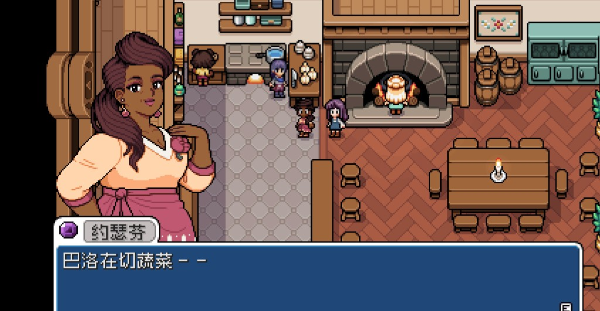
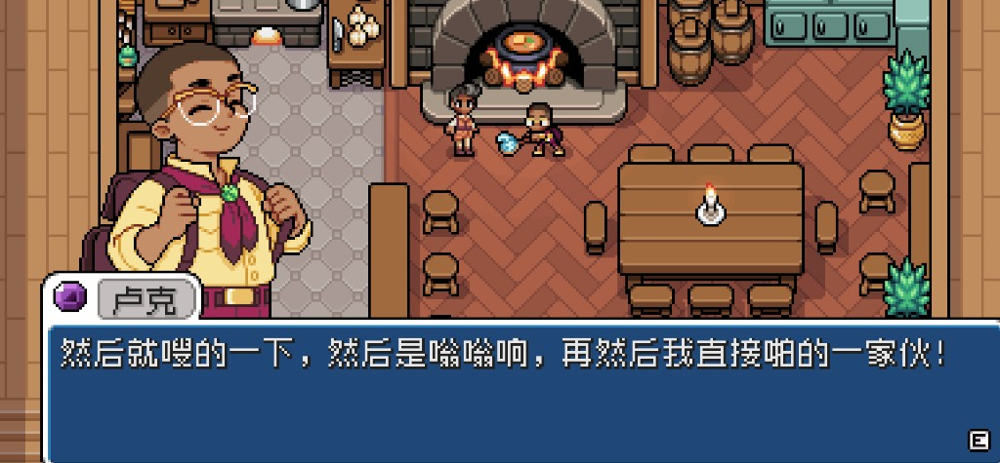
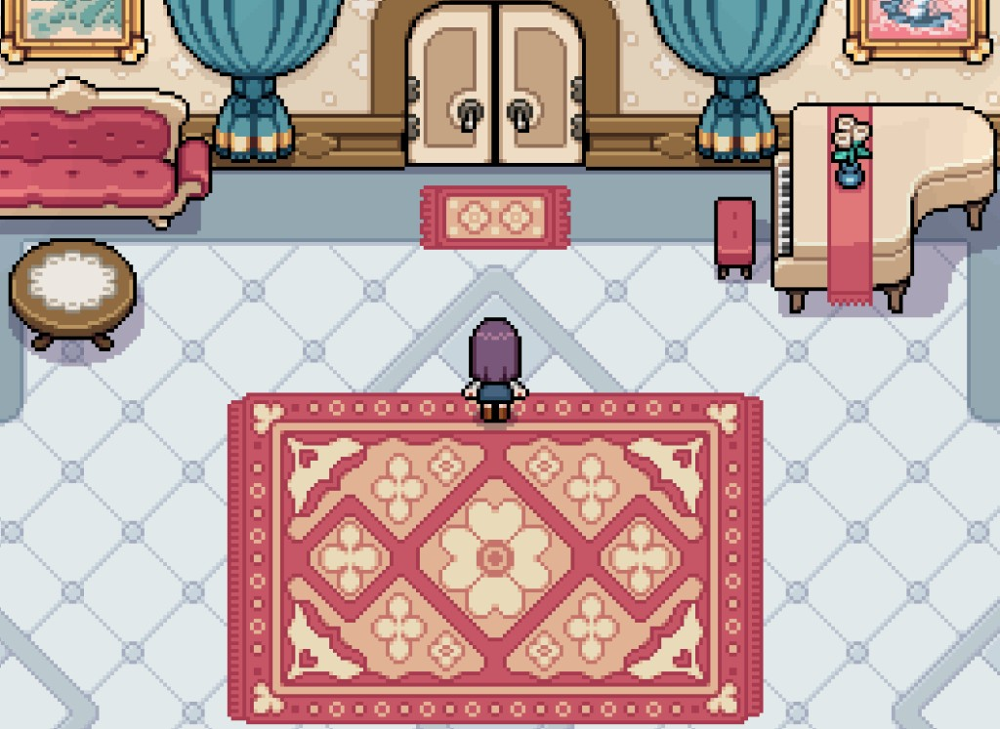
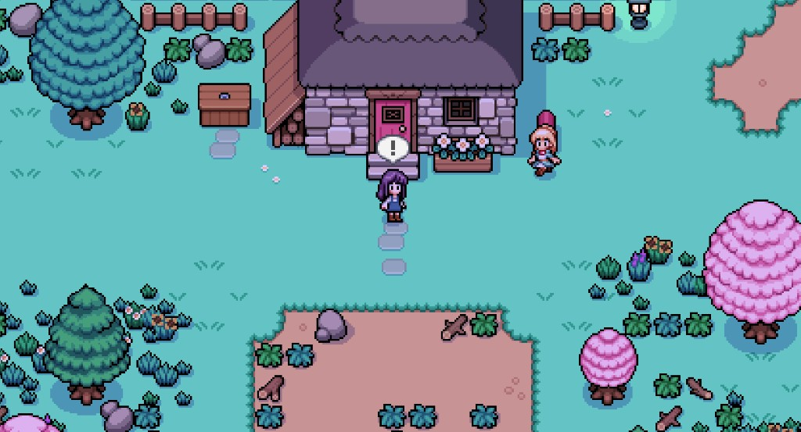

Quick answers
- Stable mornings beat heart metrics.
- Talk and light gifts are enough to dabble.
- Do not blow the seed buffer on date FOMO.
- Multiple friendships can grow slowly.
- Ignore online “must romance by summer” lists.
Wait path
Finish watering habits, town unlocks, and a money cushion. Romance chapters feel better when you are not exhausted.
Dabble path
Pick one villager you actually like. Talk weekly. Gift spare liked items. Stop when gold or energy complains.
Safe to skip
- Heart events on empty stamina
- Restarting for a “wrong” crush
Screenshots from our save
Real Fields of Mistria shots from our first-season play. Captions in English; in-game UI language may differ.




FAQ
Can I romance later?
Yes. Season one is for foundations.
Jealousy stress?
Play single-friend focus if that feels better.
Unofficial fan guide. Not affiliated with NPC Studio. Verify details in your game version.